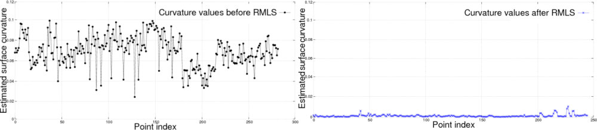

Smoothing and normal estimation based on polynomial reconstruction
This tutorial explains how a Moving Least Squares (MLS) surface reconstruction method can be used to smooth and resample noisy data. Please see an example in the video below:
Some of the data irregularities (caused by small distance measurement errors) are very hard to remove using statistical analysis. To create complete models, glossy surfaces as well as occlusions in the data must be accounted for. In situations where additional scans are impossible to acquire, a solution is to use a resampling algorithm, which attempts to recreate the missing parts of the surface by higher order polynomial interpolations between the surrounding data points. By performing resampling, these small errors can be corrected and the “double walls” artifacts resulted from registering multiple scans together can be smoothed.
On the left side of the figure above, we see the effect of estimating surface normals in a dataset comprised of two registered point clouds together. Due to alignment errors, the resultant normals are noisy. On the right side we see the effects of surface normal estimation in the same dataset after it has been smoothed with a Moving Least Squares algorithm. Plotting the curvatures at each point as a measure of the eigenvalue relationship before and after resampling, we obtain:
To approximate the surface defined by a local neighborhood of points p1, p2 … pk at a point q we use a bivariate polynomial height function defined on a robustly computed reference plane.
The code
First, download the dataset bun0.pcd and save it somewhere to disk.
Then, create a file, let’s say, resampling.cpp in your favorite
editor, and place the following inside it:
1#include <pcl/point_types.h>
2#include <pcl/io/pcd_io.h>
3#include <pcl/search/kdtree.h>
4#include <pcl/surface/mls.h>
5
6int
7main ()
8{
9 // Load input file into a PointCloud<T> with an appropriate type
10 pcl::PointCloud<pcl::PointXYZ>::Ptr cloud (new pcl::PointCloud<pcl::PointXYZ> ());
11 // Load bun0.pcd -- should be available with the PCL archive in test
12 pcl::io::loadPCDFile ("bun0.pcd", *cloud);
13
14 // Create a KD-Tree
15 pcl::search::KdTree<pcl::PointXYZ>::Ptr tree (new pcl::search::KdTree<pcl::PointXYZ>);
16
17 // Output has the PointNormal type in order to store the normals calculated by MLS
18 pcl::PointCloud<pcl::PointNormal> mls_points;
19
20 // Init object (second point type is for the normals, even if unused)
21 pcl::MovingLeastSquares<pcl::PointXYZ, pcl::PointNormal> mls;
22
23 mls.setComputeNormals (true);
24
25 // Set parameters
26 mls.setInputCloud (cloud);
27 mls.setPolynomialOrder (2);
28 mls.setSearchMethod (tree);
29 mls.setSearchRadius (0.03);
30
31 // Reconstruct
32 mls.process (mls_points);
33
34 // Save output
35 pcl::io::savePCDFile ("bun0-mls.pcd", mls_points);
36}
You should be able to find the input file at pcl/test/bun0.pcd.
The explanation
Now, let’s break down the code piece by piece.
pcl::PointCloud<pcl::PointXYZ>::Ptr cloud (new pcl::PointCloud<pcl::PointXYZ> ());
// Load bun0.pcd -- should be available with the PCL archive in test
pcl::io::loadPCDFile ("bun0.pcd", *cloud);
as the example PCD has only XYZ coordinates, we load it into a PointCloud<PointXYZ>. These fields are mandatory for the method, other ones are allowed and will be preserved.
mls.setComputeNormals (true);
if normal estimation is not required, this step can be skipped.
pcl::MovingLeastSquares<pcl::PointXYZ, pcl::PointNormal> mls;
the first template type is used for the input and output cloud. Only the XYZ dimensions of the input are smoothed in the output.
mls.setPolynomialOrder (2);
polynomial fitting could be disabled for speeding up smoothing. Please consult the code API (MovingLeastSquares) for default values and additional parameters to control the smoothing process.
// Save output
pcl::io::savePCDFile ("bun0-mls.pcd", mls_points);
}
if the normals and the original dimensions need to be in the same cloud, the fields have to be concatenated.
Compiling and running the program
Add the following lines to your CMakeLists.txt file:
1cmake_minimum_required(VERSION 3.5 FATAL_ERROR)
2
3project(resampling)
4
5find_package(PCL 1.2 REQUIRED)
6
7include_directories(${PCL_INCLUDE_DIRS})
8link_directories(${PCL_LIBRARY_DIRS})
9add_definitions(${PCL_DEFINITIONS})
10
11add_executable (resampling resampling.cpp)
12target_link_libraries (resampling ${PCL_LIBRARIES})
After you have made the executable, you can run it. Simply do:
$ ./resampling
You can view the smoothed cloud for example by executing:
$ pcl_viewer bun0-mls.pcd